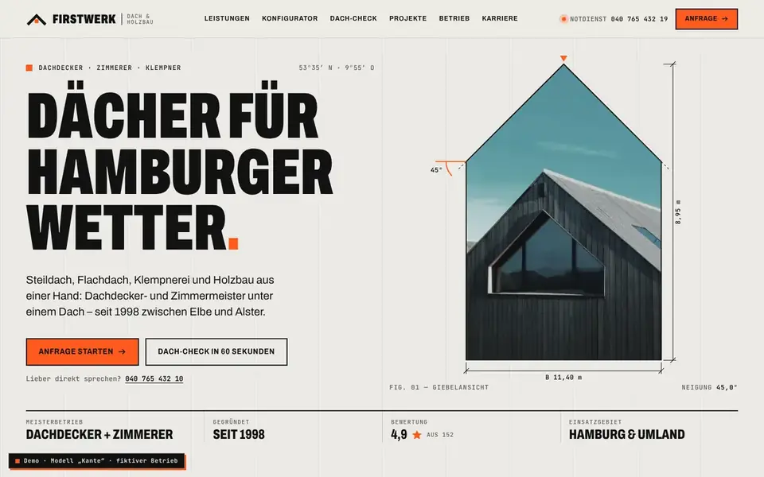
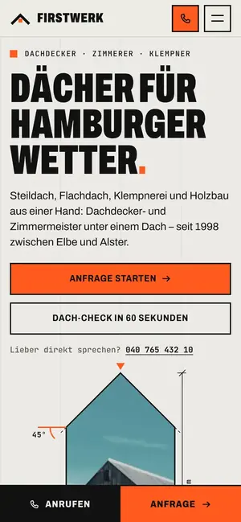

Case Study 10 / 30 · Handwerk & Bau
FIRSTWERK – Dach & Holzbau
Modell „Kante“
Dachdecker-Demo mit 3D-Dach-Konfigurator, Dach-Check und Sturm-Notdienst im harten Rasterlook.


Ausgangslage
FIRSTWERK ist ein erfundener Dachdecker- und Zimmerei-Meisterbetrieb in Hamburg. Wer hier landet, hat meist ein konkretes Problem: ein undichtes Dach, einen Sturmschaden oder die Frage, ob eine Sanierung ansteht. Die Seite soll den Notdienst sofort erreichbar machen, das Leistungsspektrum von der Eindeckung bis zum Holzbau zeigen und Besucher ohne Fachwissen zu einer brauchbaren Anfrage führen.
Idee
Das Modell „Kante“ arbeitet mit harten Rastern, schmal gesetzten Versal-Headlines in Archivo und technischen Labels in JetBrains Mono – eine Anmutung wie eine Bauzeichnung. Beton-Weiß und Fast-Schwarz tragen die Fläche, Signal-Orange setzt sparsam Akzente. Die Dachneigung zieht sich als Motiv durch: Das Hero-Foto steckt in einer Giebelmaske, die sich beim Scrollen öffnet, und zwei Laufbänder treffen sich im Winkel eines Firsts.
Was die Seite kann
- Dach-KonfiguratorFünf Dachformen und fünf Eindeckungen auf einem isometrisch projizierten 3D-Haus, mit Steckbrief (Neigung, Lebensdauer, Gewicht, Pflege, Preisniveau) und Plausibilitätsprüfung unpassender Kombinationen.
- Dach-CheckFünf Fragen führen zu einer begründeten Empfehlung zwischen Inspektion, Reparatur und Sanierung, die sich direkt in die Anfrage übernehmen lässt.
- Vorher/Nachher-SliderEin Vergleich per clip-path, bedienbar mit Maus, Touch und Tastatur, als role="slider" mit aria-valuetext.
- Leistungen als Karten-StapelSieben Leistungen mit nummerierten Detailzeichnungen als Inline-SVG, auf dem Desktop sticky gestapelt, auf dem Handy als Liste.
- Einzugsgebiet mit PLZ-CheckEine SVG-Karte zeigt das Gebiet, die Postleitzahl-Abfrage sagt, ob der Betrieb anfährt.
- Anfrage-AssistentVier Schritte mit Validierung und Zusammenfassung; Konfigurator und Dach-Check füllen ihn vor, auf dem Handy liegt eine feste Leiste mit Anrufen und Anfrage.
Dein Betrieb
So eine Seite für dich?
Schreib mir kurz, was du anbietest und was deine Website leisten soll. Du bekommst eine ehrliche Einschätzung, was sie kostet und was sie dir bringen kann.
Projekt anfragen